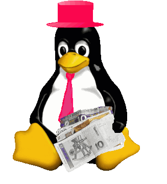

RedHat se ha convertido en una compañía pública, y ahora cualquiera
puede comprar sus acciones. Alguien había previsto esto? Ciertamente es,
en alguna forma, una evolución natural, pero no va contra el espíritu
original de Linux?
Qué será lo próximo ?
El número de este mes tiene un buen número de interesantes artículos.
Nerdbank es un nuevo e interesante proyecto, y podría ser una gran cosa
el que consiguiera despegar.
Bajo "Desarrollo de Software" y "Elementos de UNIX"
tenemos este mes varios artículos sobre lenguajes de scripting
Algunos de ellos continuarán en Noviembre, dentro del próximo número.
La mucha gente que ha configurado sendmail usando M4 se alegrarán de saber
más sobre este lenguaje de macros. El artículo que aparece en este
número muestra como se puede usar M4 en tareas relacionadas con el
"Diseño web".
EL artículo sobre el CD-ROM está orientado a novatos en Linux, y contiene un montón de información valiosa que a menudo no se encuentra en los manuales de instalación de las diferente distribuciones. Estamos ante un número interesante, y LinuxFocus continuará publicando nuevos y buenos artículos, escritos por todo tipo de lectores. Disfrutad con el nuevo número!!
 Nerdbank - una iniciativa bancaria para el uso de interfaces
abiertas en comercio electrónico, por Holger Blasum
Perl I, por Guido Socher
Dialog - un lenguaje para programar diálogos, por Philipp Gühring
La sintaxis del Tcl, por Brent B. Welch
Ejemplos con awk: Una breve
introducción, por Javier Palacios Bermejo
Cómo usar tu CD-ROM en Linux, por Yao Feng
Construyendo ficheros de texto con macros de m4, por John Perr
Nerdbank - una iniciativa bancaria para el uso de interfaces
abiertas en comercio electrónico, por Holger Blasum
Perl I, por Guido Socher
Dialog - un lenguaje para programar diálogos, por Philipp Gühring
La sintaxis del Tcl, por Brent B. Welch
Ejemplos con awk: Una breve
introducción, por Javier Palacios Bermejo
Cómo usar tu CD-ROM en Linux, por Yao Feng
Construyendo ficheros de texto con macros de m4, por John Perr
|
© 1999 LinuxFocus Página de contacto con LinuxFocus |